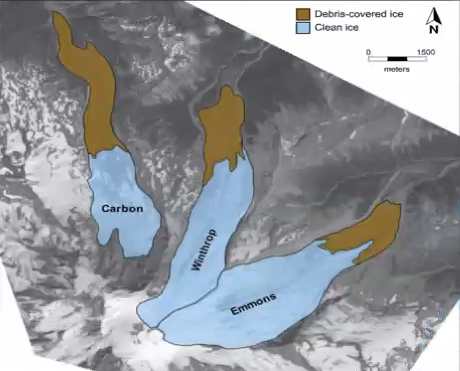

<html>
<head>
    <title>Mount Rainier Glacier Melt Rate</title>
	
	<meta charset="utf-8" />
	<meta name="viewport" content="width=device-width, initial-scale=1.0">
	
	<link rel="shortcut icon" type="image/x-icon" href="docs/images/favicon.ico" />

    <link rel="stylesheet" href="https://unpkg.com/leaflet@1.6.0/dist/leaflet.css" integrity="sha512-xwE/Az9zrjBIphAcBb3F6JVqxf46+CDLwfLMHloNu6KEQCAWi6HcDUbeOfBIptF7tcCzusKFjFw2yuvEpDL9wQ==" crossorigin=""/>
    <script src="https://unpkg.com/leaflet@1.6.0/dist/leaflet.js" integrity="sha512-gZwIG9x3wUXg2hdXF6+rVkLF/0Vi9U8D2Ntg4Ga5I5BZpVkVxlJWbSQtXPSiUTtC0TjtGOmxa1AJPuV0CPthew==" crossorigin=""></script>


	<style>
		html, body {
			height: 100%;
			margin: 0;
		}
		#mapid {
			width: 100%;
			height: 900px;
		}
	</style>

<script src="./Data/MountRainier.geojson"></script>
<script src="./Data/historic_glacier.geojson"></script>
<script src="./Data/Current_Glacier.geojson"></script>

</head>

<body>

<div id="mapid"></div>


<script>


var polygons = L.layerGroup();
    L.geoJSON(historic).addTo(polygons);


var polygons2 = L.layerGroup();
    L.geoJSON(MRpolygon).addTo(polygons2);

var polygons3 = L.layerGroup();
    L.geoJSON(current).addTo(polygons3);

var topo = L.tileLayer('https://{s}.tile.opentopomap.org/{z}/{x}/{y}.png', {
	maxZoom: 17,
	attribution: 'Map data: &copy; <a href="https://www.openstreetmap.org/copyright">OpenStreetMap</a> contributors, <a href="http://viewfinderpanoramas.org">SRTM</a> | Map style: &copy; <a href="https://opentopomap.org">OpenTopoMap</a> (<a href="https://creativecommons.org/licenses/by-sa/3.0/">CC-BY-SA</a>)'
}),
imagery = L.tileLayer('https://server.arcgisonline.com/ArcGIS/rest/services/World_Imagery/MapServer/tile/{z}/{y}/{x}', {
	attribution: 'Tiles &copy; Esri &mdash; Source: Esri, i-cubed, USDA, USGS, AEX, GeoEye, Getmapping, Aerogrid, IGN, IGP, UPR-EGP, and the GIS User Community'
}),

georeferenced = L.tileLayer('./Data/Tiles/{z}/{x}/{y}.png', {
        minZoom: 9,
        maxZoom: 12,
        tms: false,
        attribution: 'Generated by TilesXYZ'
      });

var mtRainierPopup = "<b>Mount Rainier National Park</b><br><br>I am a statovolcano!<br>The total area melted is:<br>22 sq km or<br>8.5 sq mi or<br>4,114 football fields!";


var marker = L.marker([46.8523, -121.7603]);
marker.bindPopup(mtRainierPopup).openPopup();

var glacierMarkers = L.layerGroup();

var carbonGlacierPopup = "<b>Carbon Glacier</b><br>The Carbon Glacier is on of three glaciers in the study covered with debris<br>";

var greenIcon = new L.Icon({
  iconUrl: 'https://raw.githubusercontent.com/pointhi/leaflet-color-markers/master/img/marker-icon-2x-green.png',
  shadowUrl: 'https://cdnjs.cloudflare.com/ajax/libs/leaflet/0.7.7/images/marker-shadow.png',
  iconSize: [25, 41],
  iconAnchor: [12, 41],
  popupAnchor: [1, -34],
  shadowSize: [41, 41]
});

var marker2 = L.marker([46.896163, -121.770108], {icon: greenIcon}).addTo(glacierMarkers);
marker2.bindPopup(carbonGlacierPopup).openPopup();

var purpleIcon = new L.Icon({
  iconUrl: 'https://raw.githubusercontent.com/pointhi/leaflet-color-markers/master/img/marker-icon-2x-violet.png',
  shadowUrl: 'https://cdnjs.cloudflare.com/ajax/libs/leaflet/0.7.7/images/marker-shadow.png',
  iconSize: [25, 41],
  iconAnchor: [12, 41],
  popupAnchor: [1, -34],
  shadowSize: [41, 41]
});

var marker3 = L.marker([46.885178, -121.737618], {icon: purpleIcon}).addTo(glacierMarkers);
marker3.bindPopup("<b>Winthrop Glacier</b>").openPopup();

var redIcon = new L.Icon({
  iconUrl: 'https://raw.githubusercontent.com/pointhi/leaflet-color-markers/master/img/marker-icon-2x-red.png',
  shadowUrl: 'https://cdnjs.cloudflare.com/ajax/libs/leaflet/0.7.7/images/marker-shadow.png',
  iconSize: [25, 41],
  iconAnchor: [12, 41],
  popupAnchor: [1, -34],
  shadowSize: [41, 41]
});

var marker4 = L.marker([46.874383, -121.687393], {icon:redIcon}).addTo(glacierMarkers);
marker4.bindPopup("<b>Emmons Glacier</b>").openPopup();


var mymap = L.map('mapid', {
    center: [46.8523, -121.7603],
    zoom: 12,
    layers: [imagery, polygons, marker]
});

var baseLayers = {
    "Imagery": imagery,
    "Topographic": topo,
    "Georeferenced 1914 USGS Map" : georeferenced
    };

var polygonLayer = {
    "Historic Glacier" : polygons,
    "Mount Rainier National Park" : polygons2,
    "Current Glacier" : polygons3,
    "Location of Mount Rainier" : marker,
    "Glacier Markers": glacierMarkers,
};


L.control.layers(baseLayers, polygonLayer).addTo(mymap);


</script>

</body>
</html>
